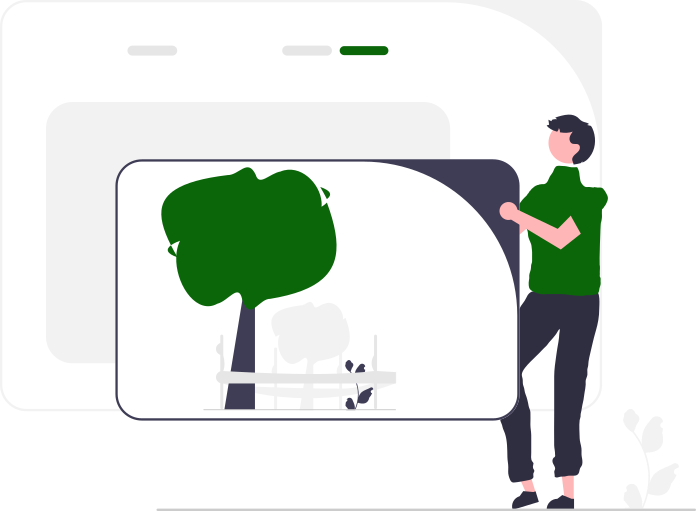
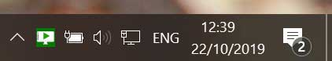
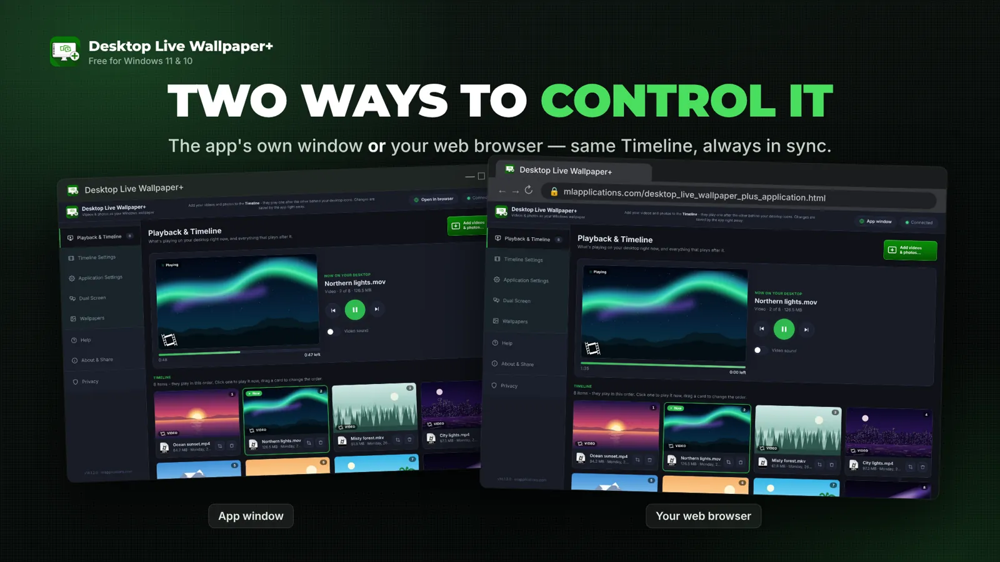
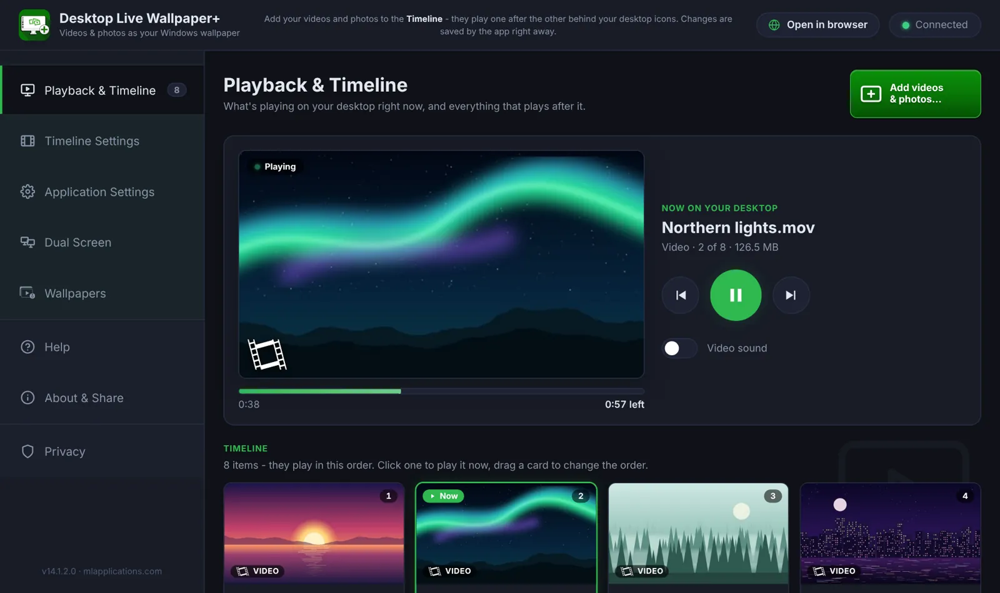
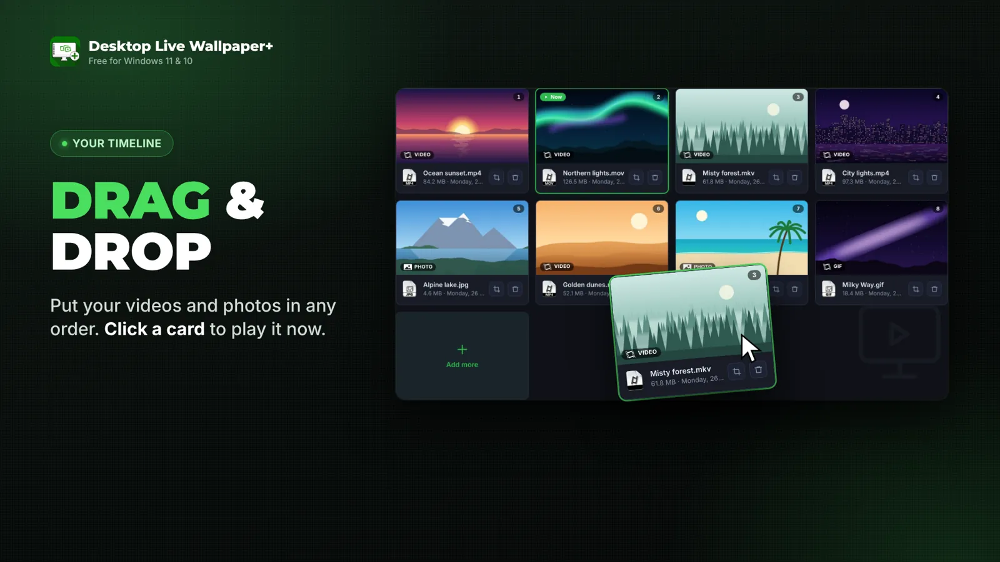
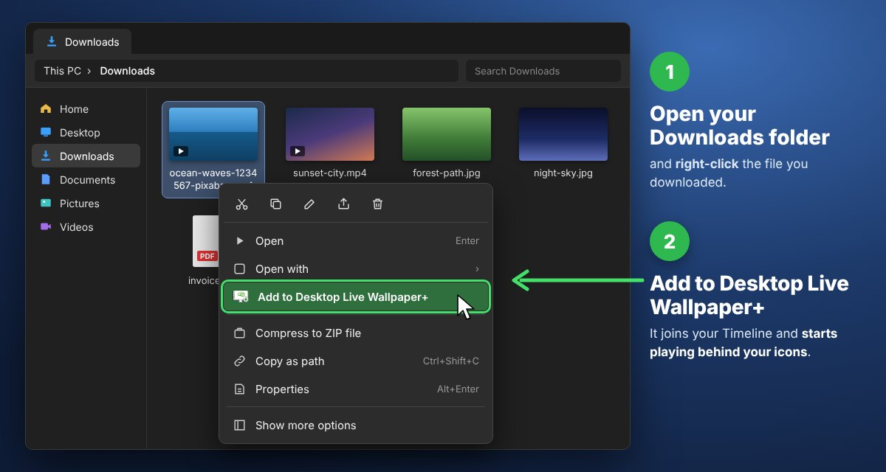
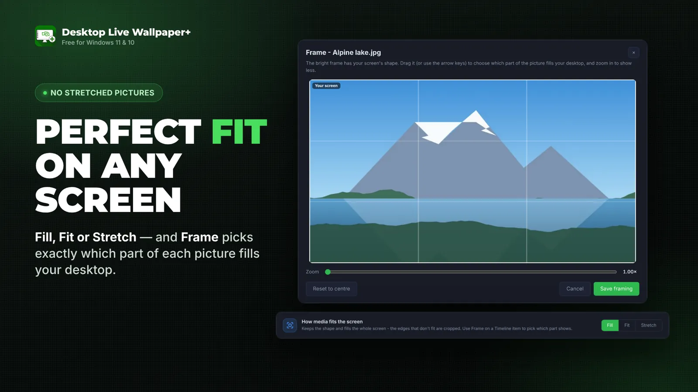

How to use Desktop Live Wallpaper+
Here you will read important info about how to control Desktop Live Wallpaper+, how to create and change the Timeline, and some tips when selecting media files.

Where is the app? Don't be confused by the way it starts, stops or hides itself
Desktop Live Wallpaper+ is a desktop application that is always running behind the actual Windows desktop, where you may have two or more applications open and running together. While it plays, you control it from:
- its start window – a small window near the taskbar that opens when the app starts;
- its controls – in the app's own window or in your web browser (same Timeline, same settings);
- its green icon in the notification area, at the bottom right of the taskbar, next to the date/time and the network icon.

1Controlling the app: how to start, hide or stop it
Starting
Starting Desktop Live Wallpaper+ is the same as starting any other Windows application you downloaded from the official Microsoft Store. If it isn't pinned to the taskbar, click the Windows logo at the bottom of the screen and find the app in the list (under the letter "D"), or simply type Desktop Live.
Do you always have to start the application yourself each time you sign in to Windows? No! After the first launch, Desktop Live Wallpaper+ starts with Windows, so each time you sign in it immediately plays your Timeline. You control this in Application Settings → Start with Windows, and you can also choose whether the start window appears or the app just starts quietly and plays. We explain this on the Settings page.
Two ways to control it
In the start window, choose where you want the controls: in the app's own window or in your web browser. Both show the same Timeline and settings, and every change is saved right away.

Stopping
Stopping Desktop Live Wallpaper+ completely can be done in either of two ways:
- In the start window, click Quit Desktop Live Wallpaper+.
- Right-click the green icon in the notification area and choose Exit (stop playing).
When the app exits, your normal Windows desktop background comes back – the color, picture or slideshow you have set in Windows Settings.
Pausing / hiding
If you close the app window or the browser tab, the app keeps playing the Timeline on your desktop – you can open the controls again from the green icon. If you want to pause the Timeline, click the green Pause button on the Playback & Timeline page, or right-click the icon in the notification area and choose Pause (and later Play). Hide (keep playing) closes the controls and keeps the wallpaper playing.

2The Timeline: how to create, reorder or change it
As you can see in the screenshot below, the Timeline is the heart of the application! The media files in your Timeline are shown as cards, in the order they play.

- Add: click the green Add videos & photos… button and select GIFs, JPGs, MP4s and so on from your folders. The files must be stored on your PC.
- Reorder: drag and drop the cards with your mouse and place them in the order you want. The new order is saved immediately.
- Play now: click any card and it starts playing on your desktop right away.
- Remove: click the remove button on a card. The file is not deleted from your PC – it only leaves the Timeline.
New: add files with a right-click
You don't even need to open the app: select one or many videos or photos in File Explorer, right-click and choose Add to Desktop Live Wallpaper+. They join your Timeline instantly.

3Tips: how to select the media files to use
Keep in mind that Desktop Live Wallpaper+ can do some really cool things with your desktop, but it can't do magic. Remember that it is a normal Windows app, and while it runs it uses your PC's memory (RAM) and processor like any other app.
Large videos vs quality
We have done our best to keep things as simple as possible, and the trade-off between the smoothness of the videos and the share of CPU and RAM the app uses is pretty good. We mention videos because decoding and displaying a video on the screen is the most resource-hungry media type. For example, if you add a 4K video but you have an old PC, you will probably see a stuttering video on your desktop. Such a video on low-end hardware will probably never play smoothly, even in the most advanced video player that exists. Moreover, a higher resolution also means a bigger file on your drive.
Hardware decoding (GPU) is on by default (Timeline Settings): the graphics card decodes the videos, which is usually smoother and much lighter on the CPU – a big help with 4K.
Resolution
Always remember (or try to remember) the resolution of your display, and try to download and select photos and videos close to it. If, for example, your display is 1920×1080, a 4K picture or video will look the same to you as a Full HD one, but the app will use more resources (RAM, CPU and GPU) to display it.
Don't know your screen resolution? Right-click the desktop and choose Display settings. Under Display resolution you will see it.
Ratio
When selecting wallpapers to download, prefer landscape pictures and avoid portrait ones – many websites mix wallpapers for phones and PCs. If a picture doesn't have your screen's shape, choose how it fits in Timeline Settings: Fill, Fit or Stretch. With Frame on a Timeline card you can pick exactly which part of a tall photo or a wide video fills your desktop.
